Graphs
Graphs can be generated within the Graphs Tab. They are automatically generated after selecting the Samples and gene to graph. Each graph is fully customisable. Currently, there are three types of graphs available: scatter plot, grouped scatter plot and column graph:

To get started, select whether to graph (2^-ΔCq) or (2^-ΔΔCq) data in the side panel, and select the samples and gene:
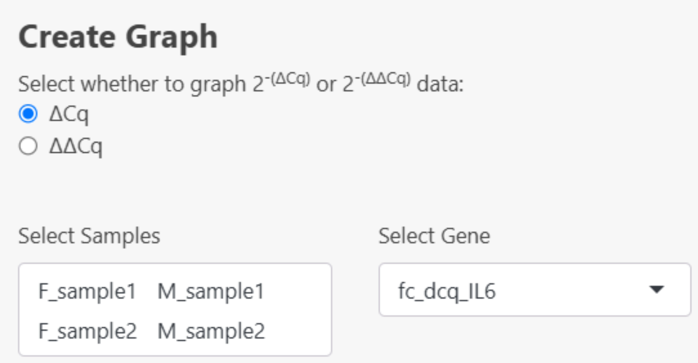
To generate the graph, type the sample names in the order to be displayed on the x-axis. The samples must be separated by a comma with no spaces. It is case-sensitive:
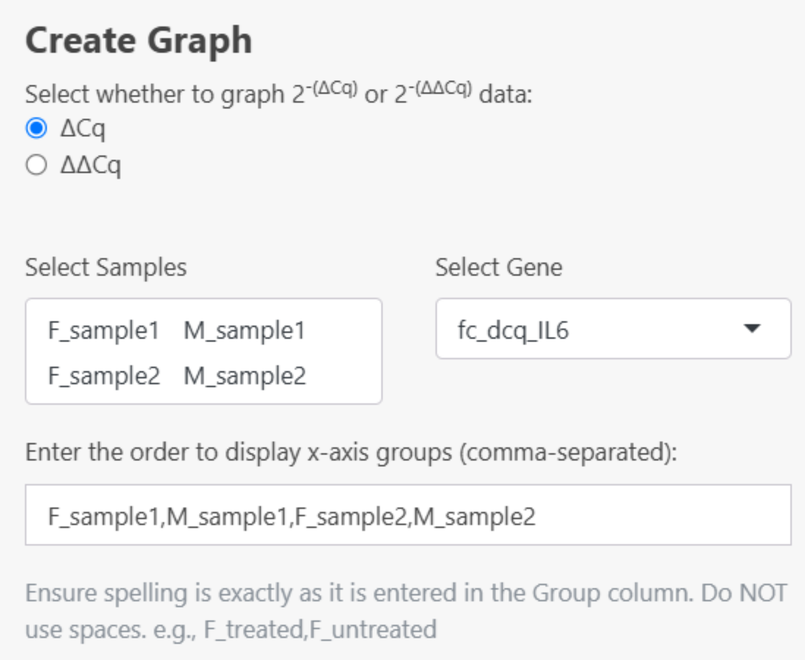
Customising Labels
Labels for the x and y axes can be changed in the side panel. To remove a label, enter a space in the text input box. The x-axis labels can be rotated by selecting the checkbox:
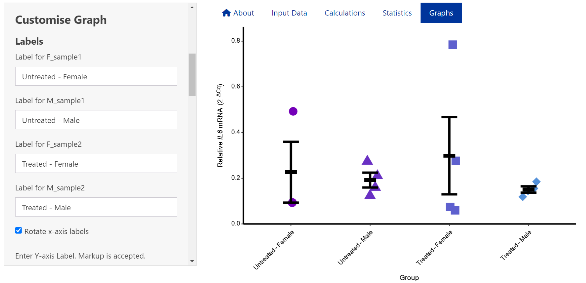
The x and y-axis titles accept markup.
The x and y-axis titles accept markup:
*italics***bold*****bold and italics***<br> </br> Line Break<sup> superscript </sup><sub> subscript </sub>
The font can be changed in the dropdown menu. If your desired font is not listed, download the graph as a scalable vector graphics file (svg) and edit it in Inkscape, PowerPoint or Illustrator. Alternatively, suggest new fonts on GitHub Issues. Text size can be changed by pressing the up or down arrow, or by typing in the required size in the respective box on the side panel
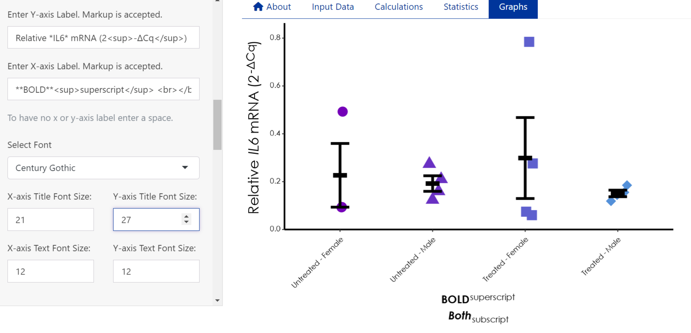
If Grouped Scatter Plot is selected, the legend can be customised or removed:
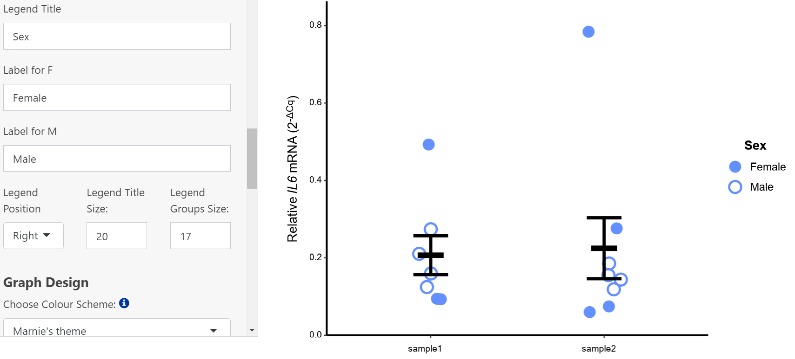
Graph Design
To change the colours of the graph, select from the drop-down menu. An error message will be displayed if there are too many groups for the selected palette. Colour palettes available:
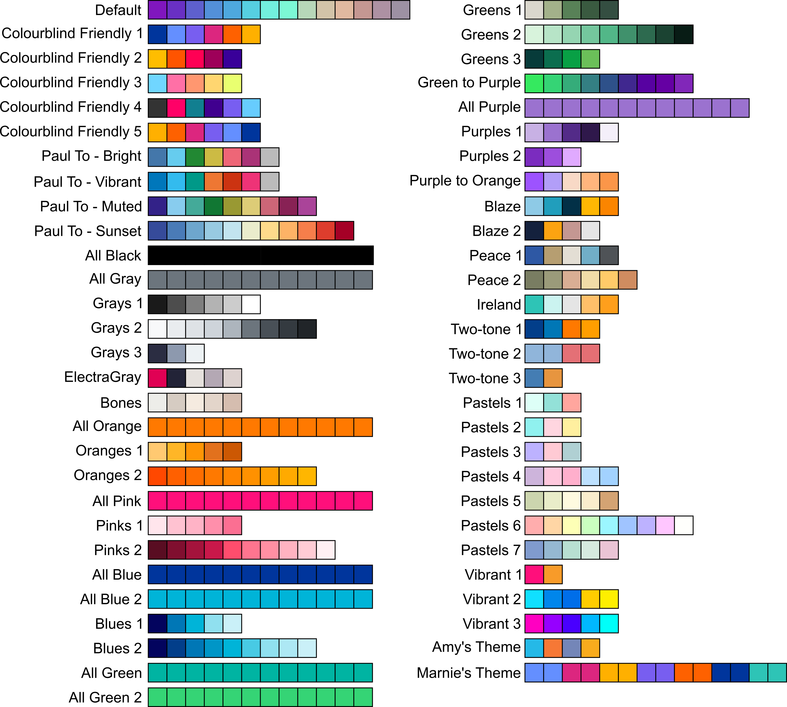 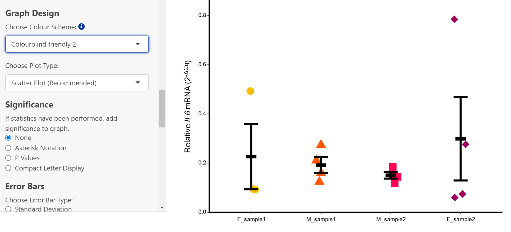
To change the graph type, select the preferred option in the Choose Plot Type menu:
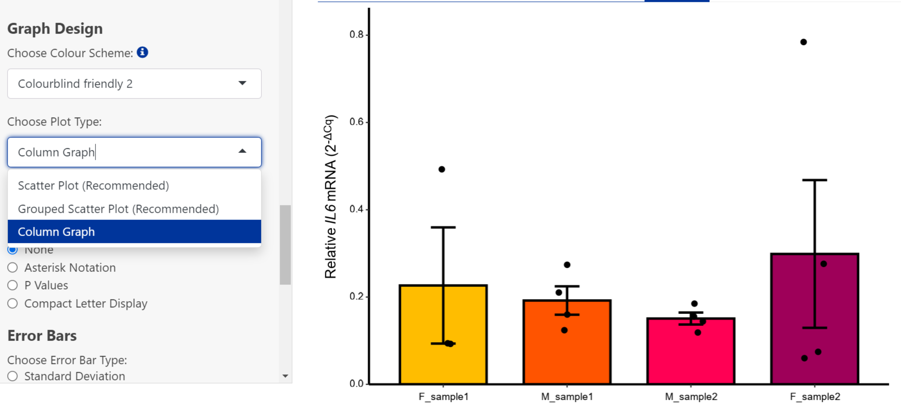
Significance
A group comparison test must be performed in the Statistics Tab to add significance options to a graph. The results from the post-hoc test will be used on the graph. The chosen calculation (i.e. 2-(ΔCq) or 2-(ΔΔCq)), samples and gene must be identical in the Statistics and Graphs tab for the correct p-values to be plotted. Error messages (Discrepancy detected) will appear if the options do not match, and will prompt the user to alter the selection. If the graph is empty, it may mean that a discrepancy was detected and needs to be changed for the graph to generate. For example, to add significance to a graph for the samples: F_sample1, M_sample1, F_sample2, M_sample2 and gene ISL1 with a log2 transformation:
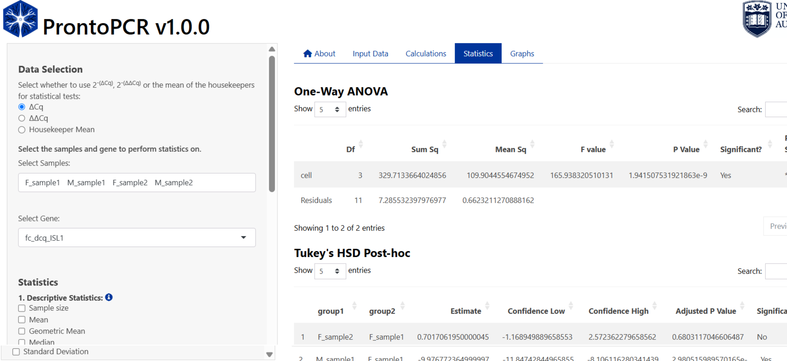
Three ways to denote significance on a graph are available, including asterisk notation (*, **, ***, ns), p-values (0.001), or compact letter display (a, b, c, ac).
- Asterisk Option: The label size (size of *), bracket thickness (line thickness), step increase (the vertical distance between each bracket) and tip length (vertical bracket length) can all be altered by changing the up and down arrows, or by entering in a number value. Non-significant comparisons can be hidden by pressing the Hide ns checkbox.
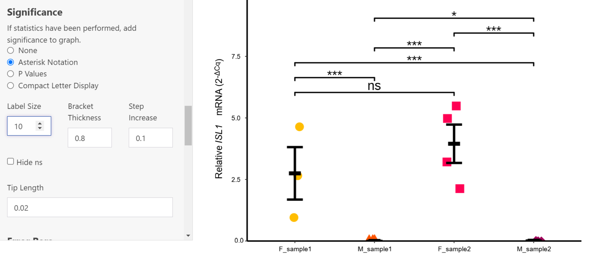
- P Values Option: The label size (size of 0.002), bracket thickness (line thickness), step increase (the vertical distance between each bracket), tip length (vertical bracket length) and p-value decimal places can all be altered by changing the up and down arrows, or by entering in a number value. Non-significant comparisons can be hidden by pressing the Hide ns checkbox. The leading 0 from the p-value can also be removed by pressing the corresponding checkbox. P = can also be added before the p-value by selecting this option in the P-value prefix selection.
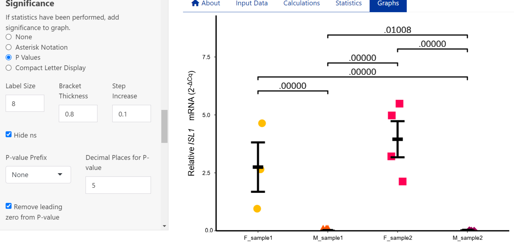
- Compact Letter Display: Letters denoting differences between groups come from the output given in the Statistics tab. The Label Size and Step Increase can be changed by using the up and down errors within the box, or entering a number.
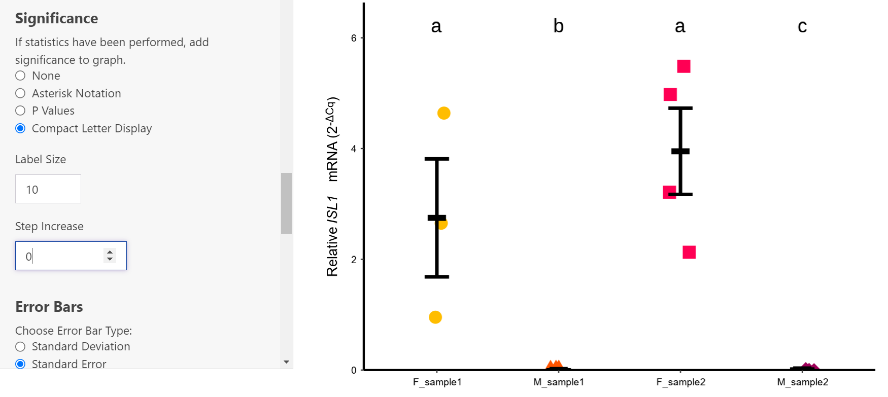
Error Bars
Three types of error bars can be selected in the Choose Error Bar section, including: Standard error, standard deviation and 95% Confidence Interval.
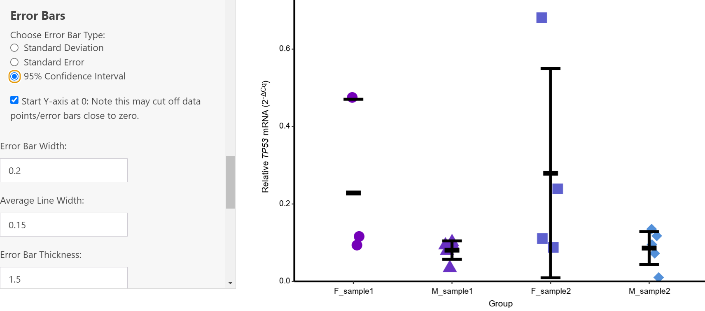
Often, error bars are missing if the Start Y-axis at 0 checkbox is selected. Uncheck this box to display error bars correctly:
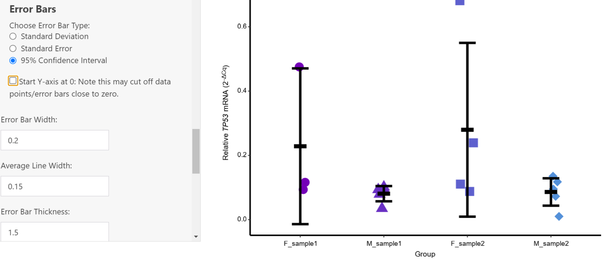
Error bar and average bar width and thickness can be changed using the up and down arrows within the box, or by entering a number:
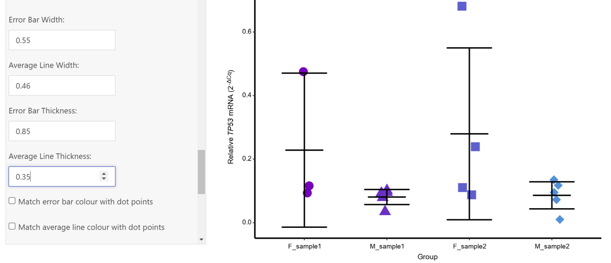
Error bar and average line colours can be matched to the dot points by selecting the corresponding checkboxes:
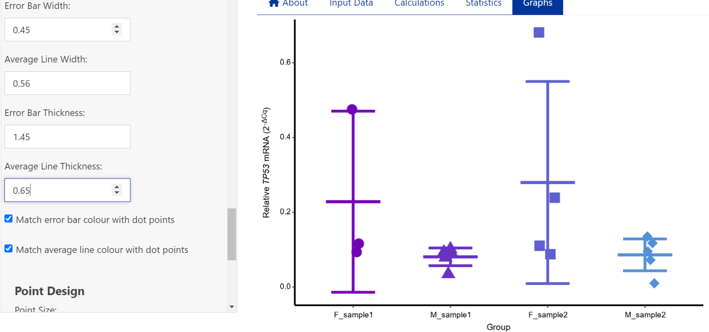
Point Design
For scatter plots and grouped scatter plots:
- Data points on the graph can be customised by size, thickness and point spread by changing the number on the corresponding boxes. Shapes can be changed using the dropdown box:
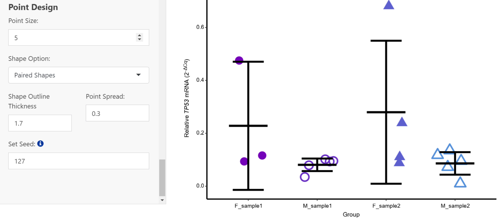
If data points are overlapping the seed number can be changed. This is a random and arbitrary number. The same seed number will keep the points in the same position each time the graph generates:
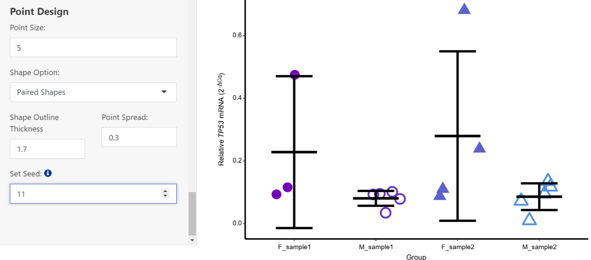
For column graphs:
- The column graph can be customised by colour fill or border by toggling the Choose fill or Border dropdown menu:
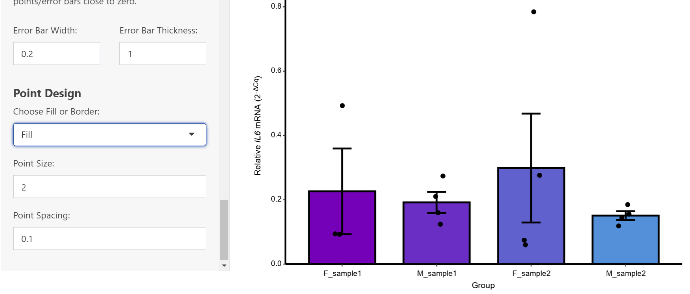
Point size and spread can be altered by changing the number of the corresponding box:
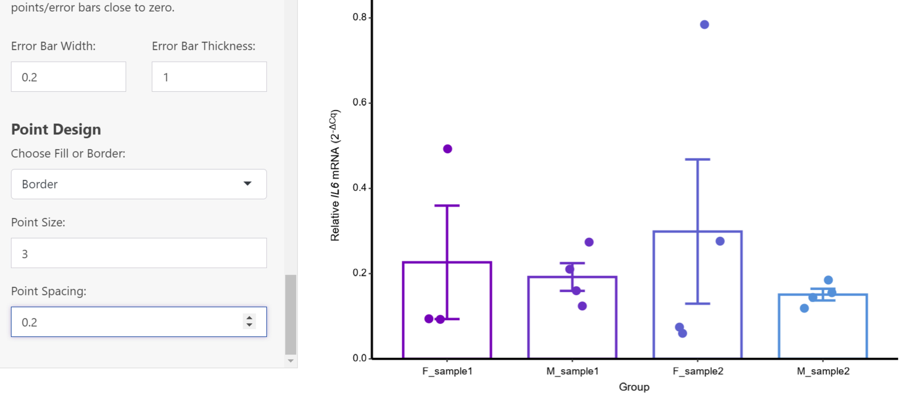
Downloading Graphs
Graphs can be downloaded by clicking the Download Graph button. Graphs can be saved as an SVG, tiff, png, or jpeg by toggling the dropdown menu. It is recommended to download as an SVG, as these files can be opened in Inkscape, PowerPoint or Illustrator to further customise graph aesthetics. Remember to ungroup the graph to edit the individual components.
The width and height of the graph can be changed, as well as the dots per inch (DPI) by altering the numbers in the corresponding boxes. Note that by changing the DPI it alters the graph dimensions, and so may change the aesthetics of the graph. After downloading a graph check it meets your requirements.
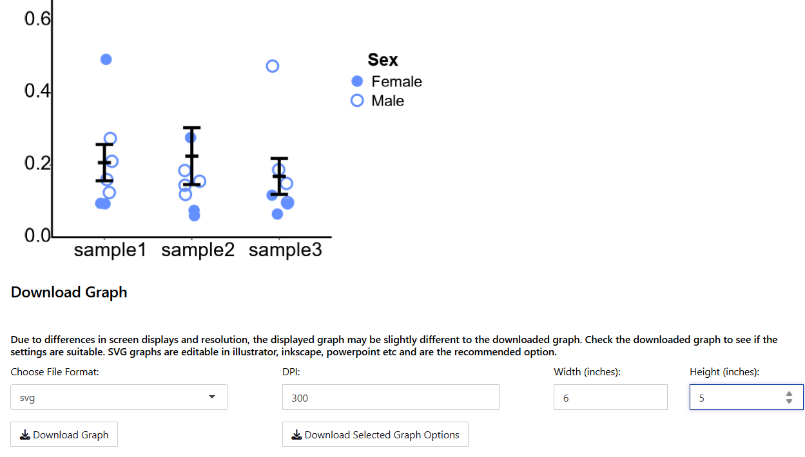
To save the options selected to create the graph, press the download selected graph options button. This is useful as a reference to keep graph aesthetics similar across samples/genes etc. It is downloaded as a HTML file which can be opened in most web browsers.
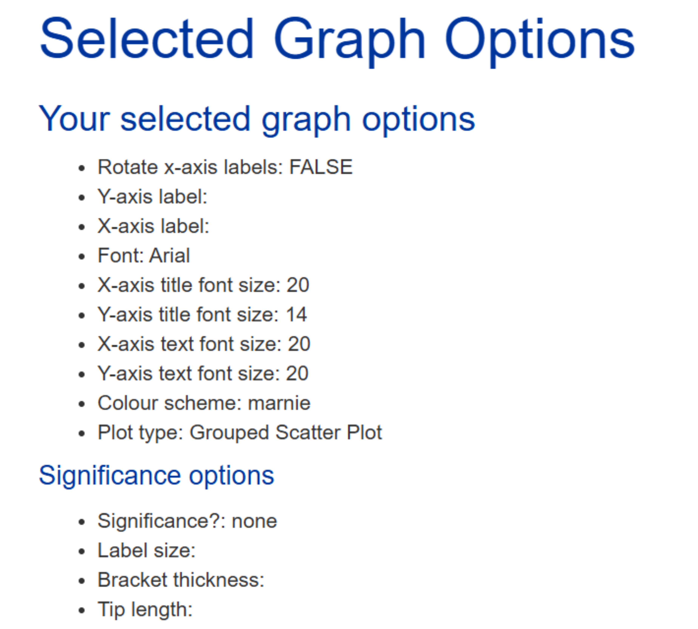